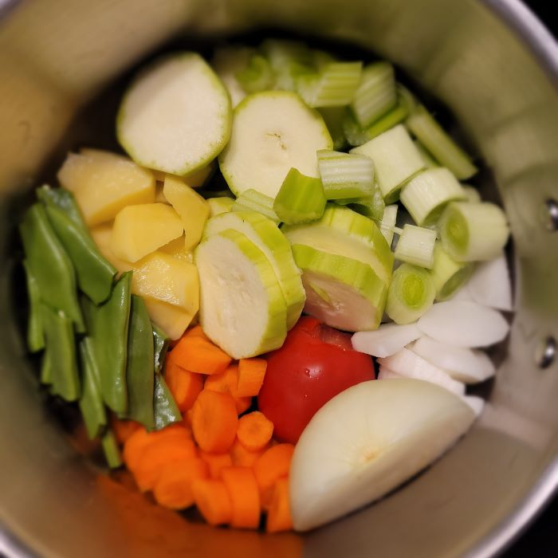

Puré de Verduras
Descripción
Las verduras se convierten en una interesante fuente de vitaminas y nutrientes. Es por ello por lo que su consumo supone un refuerzo para el sistema inmunológico.
Son platos muy fáciles de digerir. Se pueden elegir las verduras que más nos gusten o se disponga en el momento en casa. Siempre son todas muy ricas.
Ingredientes
- judias verdes
- 1 tomate
- ½ cebolla
- patatas
- calabacín
- nabo
- apio
- puerro
- zanahoria
- un muslo de pollo
- sal
- un cucharón de aceite
- agua 1.7l. - 2l. aprox.
Pasos
- Se echan todos los ingredientes con el agua en la olla y se pone a hervir. Se pone todo a la vez.
- Dejamos todo hirviendo a fuego medio.
- En la olla express una vez que hierva se deja una media hora.
- En la olla convencional una hora aprox.
- Una vez pasado el tiempo de cocción, se tritura todo muy bien. Se puede pasar por el chino para que quede una textura más fina.